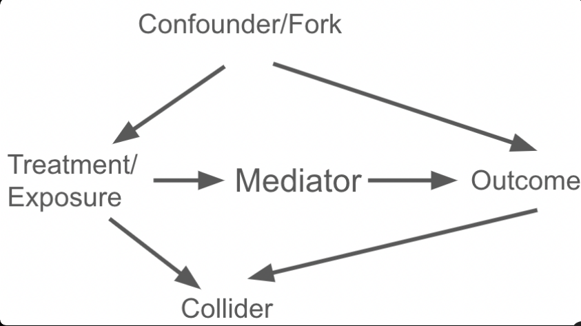

2. Directed Acyclic Graphs (DAGs)
Directed Acyclic Graphs (DAGs) are a class of graphical models that use nodes and directed edges (arrows) to represent variables and their causal or probabilistic relationships, subject to the constraint that the graph contains no directed cycles. They play a central role in causal inference, especially in the modern framework associated with Judea Pearl and others.
Overview
DAGs are non-parametric representations—they encode qualitative causal structure without specifying functional forms (linear, nonlinear, etc.). Thes are foundational in the framework developed by Judea Pearl and others. They encode assumptions about the data-generating process based on domain knowledge, theory, or expert insight. The absence of an arrow between two variables implies no direct causal link (though indirect links may exist). DAGs allow us to reason about causality using graph theory rather than just statistical associations, distinguishing correlation from causation.
A Directed Acyclic Graph (DAG) is a graph \(G=(V,E)\) with:
Nodes
Nodes \(V={X_1,\dots,X_p}\): variables (observed or latent).
- Stand for random variables, observed or unobserved (latent).
- In causal DAGs, nodes are interpreted under hypothetical interventions (i.e., well-defined actions on variables).
Directed Edges
Directed edges \(E \subseteq V \times V\): arrows \(X_i \to X_j\) indicating hypothesized direct causal effects.
- \(X \to Y\) means \(X\) is a direct cause of \(Y\) (holding other parents of \(Y\) fixed).
- Absence of an edge asserts no direct causal effect (a strong, theory-based assumption).
Acyclicity
- Acyclicity: no directed cycles (i.e., there is no path \(X \to \cdots \to X\) that returns to its start).
A DAG implies a partial order—causes precede effects. DAGs are non-parametric: they encode qualitative causal structure, not functional forms (linear/nonlinear) or effect sizes.
DAGs underpin the modern framework of causal inference associated with Judea Pearl and colleagues. They help translate domain knowledge into explicit assumptions about the data-generating process, enabling principled identification strategies.
Structural Causal Models (SCMs) and Markov Factorization
DAGs are typically interpreted via Structural Causal Models (SCMs):
\[ X\_i = f\_i\big(\text{Pa}(X\_i), U\_i\big), \]
where \[\text{Pa}(X\_i)\] are the parents (direct causes) of \(X_i\), \(f_i\) is a (possibly stochastic) function, and \(U_i\) are exogenous disturbances. Under standard causal sufficiency (or by explicitly adding latent nodes for shared causes), the errors are independent.
The Causal Markov Property and Markov Factorization state:
\[ P(X_1,\dots,X_p) ;=; \prod_{i=1}^p P\left(X_i \mid \text{Pa}(X_i)\right). \]
This factorization encodes conditional independencies implied by the DAG (assuming faithfulness—no coincidental cancellations of independencies).
Conditional Independence via d-Separation
d-Separation is a graphical test for (conditional) independence:
Two nodes \(X\) and \(Y\) are d-separated by a set \(Z\) if all paths between \[X\] and \[Y\] are blocked by \(Z\).
Canonical path motifs:
- Chain: \(X \to M \to Y\) (or \(X \leftarrow M \leftarrow Y\))
– Path is blocked by conditioning on \(M\).
- Fork (confounder): \(X \leftarrow C \to Y\)
– Path is blocked by conditioning on \(C\).
- Collider: \(X \to C \leftarrow Y\)
– Path is blocked by default; conditioning on the collider \(C\) (or a descendant of \(C\)) opens the path.
Under the Markov + faithfulness assumptions, d-separation corresponds to statistical (conditional) independence relations testable in the observed distribution.
Interventions, the do-Operator, and Truncated Factorization
An intervention \(do(X=x)\) forcibly sets \(X\) to \(x\), breaking its natural causes. Graphically, we remove incoming arrows into \[X\].
Truncated factorization gives the post-intervention distribution:
\[ P(v \mid do(X=x)) ;=; \prod_{V_i \neq X} P\left(v_i \mid \text{Pa}(V_i)\right)\Big|_{X=x}. \]
In general, \(P(Y \mid do(X=x)) \neq P(Y \mid X=x)\), because conditioning differs from intervening (conditioning leaves incoming arrows intact; intervening cuts them).
Bias, Confounding, and Adjustment
Confounders
A variable \(C\) is a confounder for the effect of \(X\) on \(Y\) if it causes both \(X\) and \(Y\): \(X \leftarrow C \to Y\). Failing to adjust for \(C\) induces bias via backdoor paths.
Backdoor Paths
A backdoor path from \(X\) to \(Y\) is any path that enters \(X\) with an arrow (i.e., starts with \(\cdots \to X\) or \(\cdots \leftarrow X\) but the first edge adjacent to \(X\) points into \(X\)). Backdoor paths are non-causal routes that induce spurious associations.
Backdoor Criterion
A set \(Z\) suffices for adjustment if:
- \(Z\) blocks all backdoor paths from \(X\) to \(Y\), and
- \(Z\) contains no descendants of \(X\) (to avoid post-treatment bias).
Then:
\[ P(Y \mid do(X=x)) ;=; \sum_{z} P(Y \mid X=x, Z=z),P(Z=z) \]
(or the integral analog for continuous \(Z\)). This requires positivity/overlap and consistency assumptions in addition to the graphical criteria.
Avoid conditioning on:
- Colliders (opens spurious paths; selection bias/Berkson’s paradox).
- Mediators if estimating total (not direct) effects.
- Descendants of \(X\) (post-treatment variables), which can introduce bias.
Frontdoor Criterion (Identification with Unmeasured Confounding)
When backdoor adjustments are impossible (e.g., unobserved \(U\) confounds \(X \leftrightarrow Y\)), frontdoor adjustment may identify the effect via a mediator \(M\) if:
- All directed paths from \(X\) to \(Y\) go through \(M\) (no unmediated effect).
- There is no unblocked backdoor from \(X\) to \(M\).
- There is no unblocked backdoor from \(M\) to \(Y\) after conditioning on \(X\).
Then:
\[ P(Y \mid do(X=x)) = \sum_{m} P(m \mid X=x) ;\sum_{x'} P(Y \mid m, x'),P(x'). \]
This is valuable when a latent \(U\) confounds \(X\) and \(Y\) but does not confound \(X \to M\) or \(M \to Y\).
Common Pitfalls: Colliders and Selection Bias
Collider bias arises when conditioning on a variable \(S\) that is a common effect:
\[ X \to S \leftarrow Y. \]
Conditioning on \(S\) (or its descendant) induces correlation between \(X\) and \(Y\) even if none existed—classic selection bias/Berkson’s paradox. Similarly, conditioning on post-treatment variables (descendants of \(X\)) can distort causal effect estimates.
Identifiability, Do-Calculus, and Equivalence
Identifiability
A causal estimand (e.g., \(P(Y\mid do(X))\)) is identifiable from observed data and the DAG if it can be expressed in terms of the observed distribution \(P(V)\) using valid graphical rules. Main tools:
- Backdoor criterion (confounding control).
- Frontdoor criterion (mediated identification under unmeasured confounding).
- Do-calculus (three rules) for more complex graphs.
If no valid adjustment or transformation exists, the effect is not identifiable without stronger assumptions or experimental data.
Markov Equivalence
Different DAGs can encode the same set of (conditional) independencies—they form a Markov equivalence class, represented by a CPDAG (partially directed acyclic graph). Data alone often cannot distinguish the direction of certain edges; domain knowledge is essential.
DAGs vs. Traditional Regression
| Aspect | Regression (as commonly used) | DAGs |
|---|---|---|
| Focus | Association | Causation |
| Assumptions | Often implicit | Explicit (graphical) |
| Bias diagnosis | Limited | Systematic via paths |
| Variable selection | Data-driven (risk of bias) | Theory-driven (via DAG) |
| Model specification | Risk of over/under-control | Guided by backdoor/frontdoor |
Key message: DAGs precede modeling—use them to decide what to adjust for (and what not to), then fit appropriate statistical estimators.
DAGs for Survival and Time-Varying Treatment
Time-to-event analyses frequently involve time-varying confounding affected by prior treatment. Represent this with longitudinal DAGs:
\[ L_0 \to A_0 \to L_1 \to A_1 \to \cdots \to Y \]
with additional arrows \(A_t \to L_{t+1}\) and potential confounding \(L_t \to A_t, Y\).
In such settings, naive regression adjustment can be biased. DAGs clarify why g-methods are needed:
- G-formula (parametric g-computation)
- Marginal Structural Models (MSMs) with IPTW
- G-estimation of Structural Nested Models
These methods emulate interventions across time consistent with the DAG’s structure (no cycles, clear temporal ordering), accommodating measured time-varying confounding affected by prior treatment.
Backdoor Criterion and Frontdoor Criterion
To identify the causal effect of X on Y (e.g., \(P(Y \| do(X)\))), we need to adjust for variables that eliminate bias while preserving causal paths.
- Backdoor Criterion: A set of variables Z satisfies the backdoor criterion relative to X and Y if:
- Z blocks all backdoor paths (paths from X to Y with an arrow into X, i.e., non-causal paths starting backward from X).
- No variable in Z is a descendant of X (to avoid post-treatment bias or blocking causal paths).
If Z satisfies this, the causal effect is identifiable by conditioning on Z (e.g., via stratification, regression adjustment, matching, or IPW). This blocks confounding by closing all non-causal backdoor paths without opening new ones.
Example: If there’s a confounder C (X ← C → Y), conditioning on C blocks the backdoor path.
- Frontdoor Criterion: When backdoor paths cannot be blocked (e.g., due to unobserved confounders U, like X ← U → Y), but there is a mediator M such that:
- X → M → Y (frontdoor path).
- No unobserved confounder affects both X and M.
- No unobserved confounder affects both M and Y.
- M intercepts all directed paths from X to Y.
Then the effect is identifiable by adjusting for M (frontdoor adjustment), even if direct backdoor confounding exists. A classic example is smoking (X) → tar deposit (M) → lung cancer (Y), with unobserved genotype (U) confounding smoking and cancer; conditioning on tar identifies the effect.
A Small Worked Example
[

- Backdoor confounding: \(U\) (unobserved) and \(C\) (observed) both cause \(X\) and \(Y\).
- Mediator: \(M\) lies on the path \(X \to M \to Y\).
- Collider: \(S\) is a common effect of \(X\) and \(Y\).
Goal: Identify the total effect of \(X\) on \(Y\).
- Do not adjust for \(M\) (blocks causal effect) or \(S\) (collider; induces bias).
- If \(U\) is unobserved, backdoor via \(U\) remains open—backdoor adjustment with \(C\) alone is insufficient.
- If frontdoor conditions hold for \(M\) (i.e., \(U\) does not confound \(X\to M\) nor \(M\to Y\) given \(X\), and \(M\) intercepts all \(X\to Y\) paths), you can use the frontdoor formula.
- Otherwise, the effect is not identifiable from purely observational data.
Estimating a total effect when identifiable:
- If all confounders of \(X\to Y\) are observed (say only \(C\) and no \(U\)), a minimal sufficient adjustment set is \({C}\):
\[ P(Y \mid do(X=x)) = \sum\_c P(Y \mid X=x, C=c) P(C=c). \] - Never include \(S\) (collider) or \(M\) (mediator) for total effects.
Practical Workflow
- State the question and define the estimand (total effect, controlled direct effect, natural effects, etc.).
- Draw the DAG from domain knowledge (include plausible unobserved variables; be explicit about timing).
- List all paths from treatment \(X\) to outcome \(Y\).
- Classify each path: directed (causal), backdoor (non-causal), colliders, mediators.
- Choose an adjustment set that blocks all backdoors and avoids post-treatment/colliders. If impossible, check frontdoor or do-calculus.
- Pick an estimator consistent with your choice (e.g., regression with appropriate covariates, matching, IPW, g-formula, doubly robust estimators).
- Check assumptions: positivity/overlap, SUTVA/consistency, model specification; conduct sensitivity analyses for unmeasured confounding.
- Report transparently: show the DAG, justify exclusions/inclusions, and document identifiability logic.
Tools:
- DAGitty (web): draw DAGs and obtain minimal sufficient adjustment sets.
- R:
dagitty,ggdag,causaleffect. - Python:
pgmpy(graphical models), emerging causal libraries.
Applications
- Epidemiology & Biostatistics: confounding control, mediation, selection bias, transportability.
- Economics & Policy: program evaluation, instrumental variables, frontdoor opportunities.
- Social Sciences: selection mechanisms, collider pitfalls in survey designs.
- Machine Learning: causal discovery (PC, GES, FCI), causal representation learning, fairness.
- Clinical & Survival Analysis: DAGs for time-varying exposures and confounders (see below).
Limitations and Good Practices
- Model dependence: DAGs reflect assumptions; misspecification yields wrong conclusions.
- Equivalence classes: Data alone may not orient edges; rely on theory and temporality.
- Unmeasured confounding: If unavoidable, use sensitivity analyses, instruments, negative controls, or leverage frontdoor where justified.
- Measurement error: Represent it explicitly (error nodes) and consider its implications for identifiability.
- Positivity: Ensure overlap; violations undermine identification even with correct DAG logic.
Quick Reference: What to Adjust For
- Confounders (common causes): Yes (block backdoors).
- Mediators: No for total effects; Yes when estimating direct effects (with care).
- Colliders: No (and avoid their descendants).
- Post-treatment variables: No for total effects.
- Instruments (valid IVs): No as covariates for total effects (can increase bias if invalid).
Key Takeaways
- DAGs encode causal assumptions; they are not automatic discovery of truth.
- d-Separation links graph structure to (conditional) independence in data.
- Interventions are different from conditioning; use do-operator logic.
- DAGs guide what to adjust for (and what not to) to identify causal effects.
- When backdoors can’t be blocked, consider frontdoor or do-calculus.
- For time-varying problems, use g-methods motivated by longitudinal DAGs.
Summary and Conclusion
Directed Acyclic Graphs (DAGs) provide a rigorous, non-parametric language for encoding causal assumptions and guiding valid statistical adjustment. By making assumptions explicit through nodes and directed edges, DAGs help researchers distinguish confounding from mediation, diagnose collider bias, and apply identification tools such as the backdoor criterion, frontdoor criterion, and do-calculus. When standard adjustment fails—due to unmeasured confounding or time-varying treatment–confounder feedback—DAGs motivate alternative strategies including g-methods. Mastering DAGs is essential for translating domain knowledge into defensible causal inference.
Resources
1. Foundational Texts - Pearl, J. (2009). Causality: Models, Reasoning, and Inference (2nd ed.). Cambridge University Press.
The definitive treatment of DAGs and causal calculus, including frontdoor criterion derivation - Hernán, M. A., & Robins, J. M. (2020). Causal Inference: What If. Boca Raton: Chapman & Hall/CRC.
Practical guide to DAGs, g-methods, and implementation in epidemiology (freely available at www.hsph.harvard.edu/miguel-hernan/causal-inference-book)
2. Key Papers on Frontdoor Criterion
- Pearl, J. (1995). “Causal diagrams for empirical research”. Biometrika, 82(4), 669–688.
Original derivation of frontdoor criterion - Glymour, M. M., et al. (2022). “Frontdoor adjustment in environmental epidemiology”. Environmental Health Perspectives, 130(5), 057001.
Application to air pollution studies with biomarker validation
3. Packages & Documentation
- dagitty: cran.r-project.org/package=dagitty
Core DAG operations and adjustment set derivation - ggdag: cran.r-project.org/package=ggdag
Publication-quality DAG visualization - ipw: cran.r-project.org/package=ipw
Inverse probability weighting for MSMs - EValue: cran.r-project.org/package=EValue
Sensitivity analysis for unmeasured confounding - ltmle: cran.r-project.org/package=ltmle
Longitudinal targeted maximum likelihood estimation for time-varying confounding
4. Interactive Tools
- DAGitty Web App: www.dagitty.net
Interactive DAG construction, adjustment set derivation, and R code export - Causal Diagram App: shiny.ihmp.org/causal-diagrams
Educational tool for exploring bias structures
5. Environmental Health Applications
- Wu, X., et al. (2022). “Short-term exposure to wildfire smoke and hospital admissions in California”. New England Journal of Medicine, 387(15), 1371–1380.
Time-varying confounding in wildfire smoke studies - Patel, M. M., et al. (2023). “Personal exposure monitoring breaks confounding in traffic pollution studies”. Environmental Health Perspectives, 131(3), 037002.
Frontdoor-like identification using wearable sensors
6. Tutorials & Courses
- Harvard Chan School Causal Inference Curriculum: www.hsph.harvard.edu/miguel-hernan/causal-inference-book
Free online textbook with R/Stata code - Causal Inference Bootcamp (Johns Hopkins): www.coursera.org/learn/causal-inference
Practical implementation of DAGs and g-methods - dagitty.net Tutorials: www.dagitty.net/learn
Step-by-step DAG construction and analysis